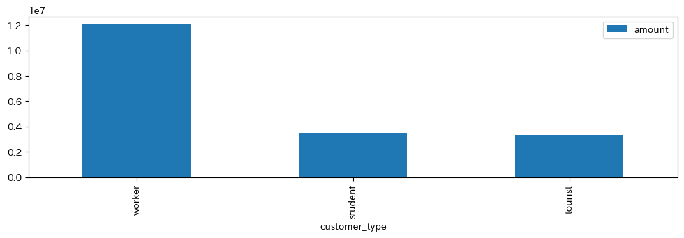

調査する内容
最初は天気による売り上げの変化を分析しようと思ったが、フレームデータ同士を結合する方法が分からなかったため、それを作る過程でできた表をwebにアップしました。
pos.csvのdatetimeから時間帯だけを抽出して、その中で一番売り上げが多かった時間をmodeを使って出力した。
shape: (1, 1)
| most_frequent_time |
|---|
| time |
| 12:18:00 |
天気
weatherのデータからどの天気の時が一番売れ行きがいいか出力したが、結果は明らかだった。
顧客の分析
お弁当を購入した人の中で1番お金を落としてくれたタイプの人が分かるように出力したが、こちらの結果もあきらかだった。